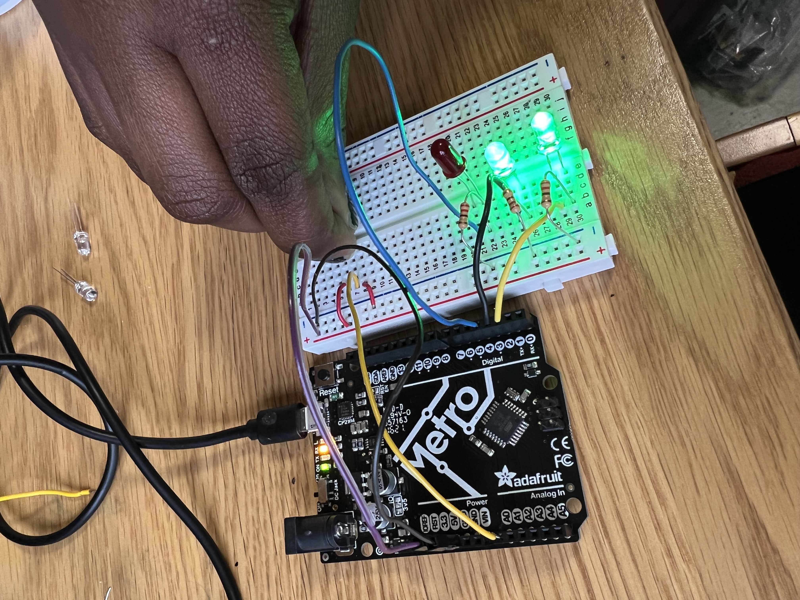

### Week 4: Microcontrollers
Hello there and welcome to the end of week 4,
This week we were instructured with the task of programming an Arduino board to do something. Anything.
I decided to create a Love-O meter inspired by the Arduino Projects Book. The idea was to turn the arduino into a love machine using analog input and registering how hot someone really is and potentially compare it with somebody else's temperature.
In order to complete the project, I used 3 LED (I could not find the red ones, so I used green), 3 2220 OHM resistor, and a temperature sensor (TMP sensor) as well as some wires and an arduino board of course.
This project was particularly interesting to me because I wanted to start getting used to how TMP sensors work because my final project will be require them.
How it works:
The TMP sensor measures how warm your skin (really fingers) is and outputs a changing voltage depending on the temperature it senses, hence the use of an analog input instead of a digital one in order to capture the smallest increments of voltage and then temperature.
It has three pins: one that connects to ground, another that connects to power,
and a third that outputs a variable voltage to your Arduino. Depending on the sensor's output and if it exceed a certain value, the LEDs would turn on and off one after the other, indicating how warm you are.
I also took advantage of the Arduino's serial monitor to report back and analyze results from the microcontroller and be able to tweak my code to fit the desired outcome.
The circuitry:
Below is the picture of the circuit at ambiant temperature (hence only 1 LED lighting up) as well as its sketch.
Step 1: Wire up the breadboard so you have power and ground.
Step 2: Attach the cathode (short leg) of each of the LEDs you are using to
ground through a 220-ohm resistor. Connect the anodes of the LEDs to pins 2 through 4. These will be the indicators for the project
Step 3: Place the TMP36 on the breadboard with the rounded part facing away from the Arduino (the order of the pins is important!)
as shown in Fig. 2. Connect the left pin of the flat facing side to
power, and the right pin to ground. Connect the center pin to pin
A0 on your Arduino. This is analog input pin 0.
The code:
In a nutshell, these are the different instructions that the code executes:
1. Gets a pair of useful constants
2. Initialize the serial port to the desired speed using Serial.begin () function
3. Initialize the digital pin directions and turn off using for () loop and pinMode ()
4. Read the temperature sensor using loop () function as well as sensorVal () and analog read ()
5. Send the temperature sensor values to the computer using Serial.print () to send information from the arduino to the connected computer.
<pre>
<code>
const int sensorPin = A0;
const float baselineTemp = 20.8;
void setup() {
Serial.begin(9600); // open a serial port
for (int pinNumber = 2; pinNumber < 5; pinNumber++) {
pinMode(pinNumber, OUTPUT);
digitalWrite(pinNumber, LOW);
}
}
void loop() {
int sensorVal = analogRead(sensorPin);
Serial.print("Sensor Value: ");
Serial.print(sensorVal);
</code>
</pre>
6. Convert sensor reading to voltage using a float holder. There was some math involved to geet the actual voltage, but knowing that the voltage value is between 0 and 5 volts and that in the arduino analog input 5v = 1024.0, multiplying the value obtained using sensorVal by 5 outputs the actual voltage on the pin which is then printed out on the serial monitor.
7. Convert the voltage to temperature and send the value to the computer
8. Turn off LEDs for a low temperature using if ()...else statement
<pre>
<code>
// convert the ADC reading to voltage
float voltage = (sensorVal / 1024.0) * 5.0;
Serial.print(", Volts: ");
Serial.print(voltage);
Serial.print(", temperature in Celsius: ");
// convert the voltage to temperature in degrees
float temperature = (voltage - .5) * 100;
Serial.println(temperature);
if (temperature < baselineTemp) {
digitalWrite(2, LOW);
digitalWrite(3, LOW);
digitalWrite(4, LOW);
</code>
</pre>
9. Turn on one LED for a low temperature using the and (&&) operator
10. Turn two LEDs for a medium temperature
11. Turn on three LEDs for a high temperature
<pre>
<code>
} else if (temperature >= baselineTemp + 2 &&
temperature < baselineTemp + 4.2) {
digitalWrite(2, HIGH);
digitalWrite(3, HIGH);
digitalWrite(4, LOW);
} else if (temperature >= baselineTemp + 4.2) {
digitalWrite(2, HIGH);
digitalWrite(3, HIGH);
digitalWrite(4, HIGH);
}
delay(1);
}
</code>
</pre>
Here is a demonstration when I touch tried it and what the serial monitor was showing at the moment.

Now in comparison, you can see the red LED turning on when my roommate touches the sensor (ultimately proving that they are not compatible to me. Currently accepting applications for a new one)
This week shoutout goes to Chris for helping me out during OH.